Deformable GANs for Pose-based Human Image Generation
2018-04-06
Deformable skip connections
Nearest-neighbour loss
Method
To generate a human image conditioned on two different variables: the appearance of a specific person and the pose of the same person in another image.
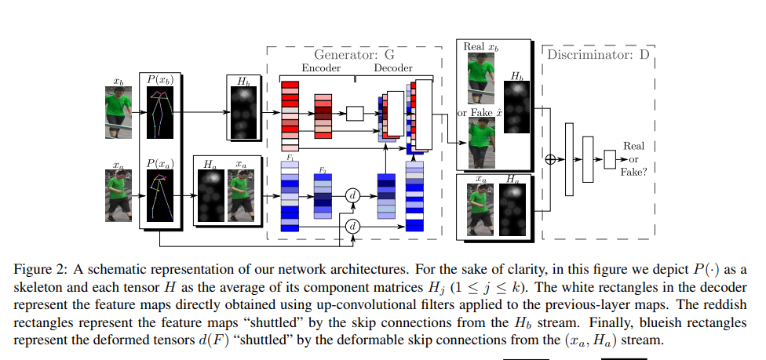
Result

Dense Intrinsic Appearance Flow for Human Pose Transfer
2019-03-27
Method
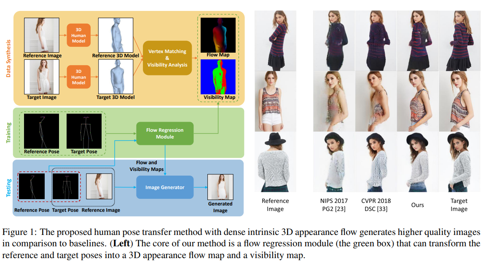
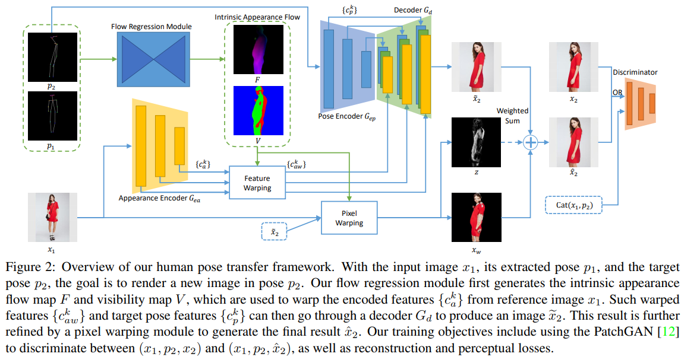
18 human keypoints extracted by a pose estimator are encoded into a 18-channel binary heatmap.
Input: image x1 , extracted pose p1, target pose p2
The module first predicts from (p1, p2) the intrinsic 3D appearance flow F and visibility map V, then use the tuple (x1, p2, F, V) for image generation.
A dual-path U-Net is proposed to separately model the image and pose information.
A feature warping module is proposed to handle the spatial misalignment issue.
A pixel warping module is proposed to warp pixels in input image x1 to the target pose.
PatchGAN is used to score the synthesized image patches.
Difference from previous work
Integrate implicit reasoning about 3D geometry from 2D representations only.
Evaluation Metrics
SSIM – Structure Similarity
IS – Inception Score
FashionIS – Fashion inception score
ArrtRec-k – Clothing attribute retianing rate
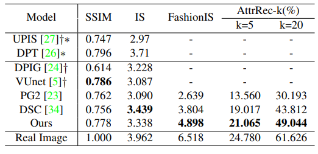
Result
Everybody Dance Now
2019-08-27
Method
pose detection
Use Open-Pose pose detector to create pose stick figures given frames from the source video.
global pose normalization
Account for differences between the source and target body shapes and locations within the frame.
mapping from normalized pose stick figures to the target subject
Use adversarial training to learn the mapping from the pose stick figures to images of the target person. Pose to video translation using temporal smoothing and Face GAN
Difference from previous work
Early methods focused on creating new content by manipulating existing video footage.
Classic computer graphics approaches to motion transfer attempt to perform this in 3D –> retargeting problem. The solutions include the use of inverse kinematic solvers and retargeting between different 3D skeletons.
Several approaches rely on calibrated multi-camera setups to scan a target actor and manipulate their motions through a fitted 3D model.
Transfer head position and facial expressions between human subjects and render results in video.
Neural re-rendering to enhance rendering of human motion capture for VR/AR.
This paper learn to synthesize novel motions and use 2D representation.
Retarget full body motion
2D pose stick figures as inputs
Adress motion transfer between subjects.
Result
see paper, also has limitations.
Animating Arbitrary Objects via Deep Motion Transfer (Monkey-Net)
2019-08-30
To animate an object based on the motion of a similar object in a driving video.
Method
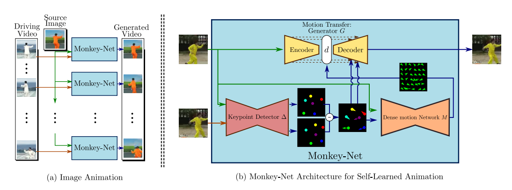
keypoint detector
Unsupervised keypoint detection
dense motion prediction network
Generate dense heatmaps from sparse keypoints
motion transfer network
Synthesize the output frames with the input of motion heatmaps and appearance infomation extracted from the source image.
Difference from previous work
deep video generation
Closely related, using a deep learning architecture.
Tackle a more challenging task: image animation requires decoupling and modeling motion and content information, as well as a recombining them.
object animation
Recycle GAN only learns the association between two specific domains.
This method could animate an image depicting one object without knowing at training time which object will be used in the driving video.
This work design a self-supervised deep network for animating static images, which is effective for generating arbitrary objects.
Evaluation Metrics
L1 – L1 distance for video reconstruction task
AKD – average keypoint distance between motion of the generated video and the ground truth video motion(Tai-Chi and Nemo dataset)
MKR – missing keypoint rate. percentage of keypoints detected in the ground truth frame. (Tai-Chi dataset)
AED – Average Euclidean Distance between a feature representation of the ground truth and the generated video frames.
FID – Frechet Inception Distance to evaluate the quality of individual frames.
Result
Unsupervised Keypoint Learning for Guiding Class-Conditional Video Prediction
2019-10-04
A deep video prediction model conditioned on a single image and an action class.
Method
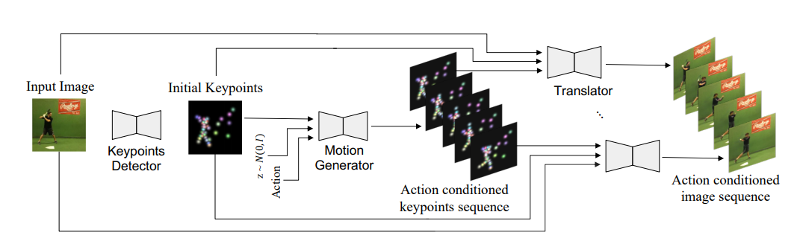
Learning the keypoints detector with the image translator
Learning the image translation between two frames (v, v’) in the same video. It enforces the network to automatically find the most dynamic parts of the image, which can be used as the guidance to move the object in the reference image. The difference between (v, v’) corresponds to keypoints set (k, k’).
Learning the motion generator with pseudo-labeled data
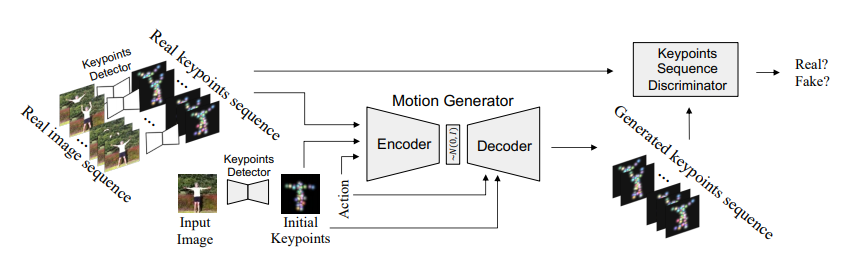
cVAE framework conditioned on the initial keypoints and the action class.
Difference from previous work
Deterministic models: have difficulty in generating videos for novel scenes that they have not seen before.
GAN and VAE show using keypoints is effective, but require frame-by-frame keypoints labeling, which limits the applicability of the method.
Some works use unsupervised way to train the keypoint detector and show successful results.
This paper propose a robust image translator using the analogical relationship between the image and keypoints.
A background masking to suppress the distraction from noisy backgrounds.
Network trained by optimizing the variational lower bound that is comprised of the KL-divergence, the reconstruction loss and adversarial loss.
Result
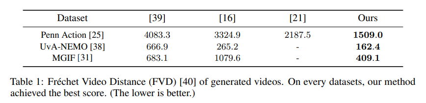
Action recognition accuracy: 68.89
Deep Image Spatial Transformation for Person Image Generation
2020-03-02
A differentiable global-flow local-attention framework to reassemble the inputs at the feature.
Method
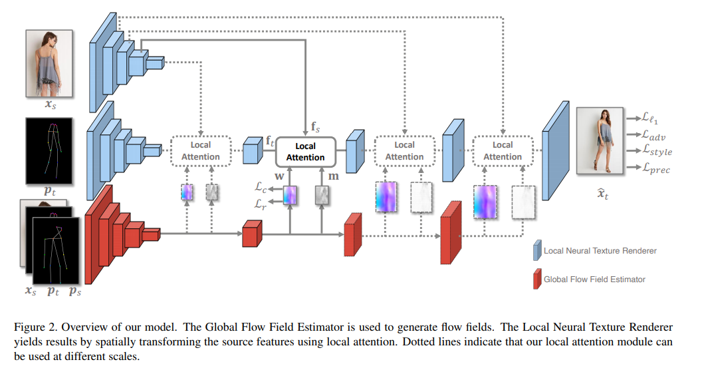
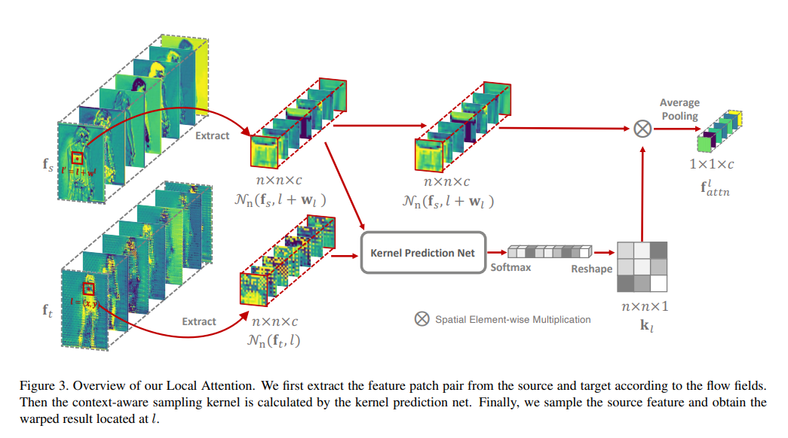
This work combines flow-based operation with attention mechanisms.
The framework forces each output location to be only related to a local feature patch of sources.
The Flow Field Estimator is responsible for extracting the global correlations and generating flow fields.
The Target Image Generator is used to synthesize the final results using local attention.
A content-aware sampling method is proposed to calculate the local attention coefficients.
Difference from previous work
Pose-guided person image generation
Does not need any supplementary information and obtains the flow fields in an unsupervised way.
Image Spatial Transformation
Appearance flow warps image pixels instead of features and limits the model to be unable to generate new contents and capture large motions.
This model warps features instead of pixels and use the sampling correctness loss to constraint the flow field w to sample semantically similar regions.
Result
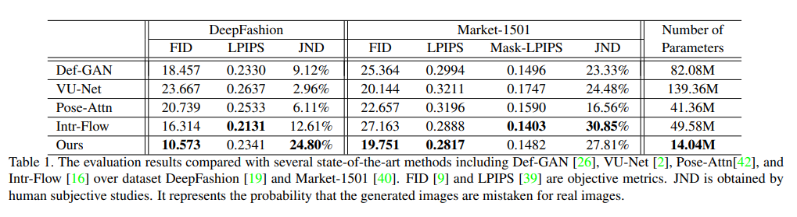
Human motion transfer from poses in the wild
2020-04-07
Method
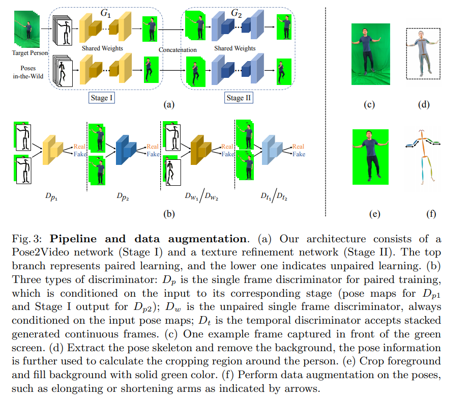
Pose2Video Network
pix2pixHD network. multi-frame input.
A pose augmentation method is proposed to minimize the traning-test gap by randomly dropping some input channels, perturb the location of joints keypoints, and elongate or shorten body part lengths in some channels.
Texture Refinement Network
Two-stage texture refinement network architecture to achieve superior texture quality.
pose2image, image2image
Follows setting of condition GAN.
Unified paired and unpaired learning
A unified paired and unpaired learning strategy to improve the robustness to detection errors
Difference from previous work
Foreground only to save network capacity and computation time and costs. Systhesized foreground be easily reused on a new
background.
Result
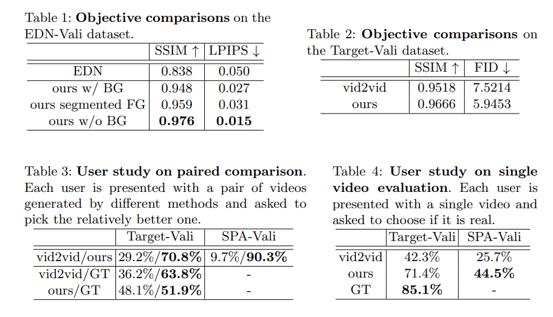
MISC: Multi-condition Injection and Spatially-adaptive Compositing for Conditional Person Image Synthesis
2020-05-01
Conditional image generation and image compositing.
Method
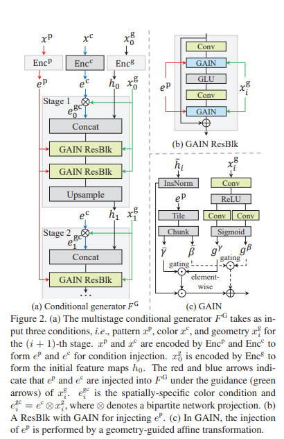
Conditional person generation model
Visually concrete condition of geometry, pattern injection, and color injection.
Spatially-adaptive image composition model
Pixel transformation method, which uses NN to estimate the contrast and brightness transformation params.
[1] Bor-Chun Chen and Andrew Kae. Toward realistic image
compositing with adversarial learning. In CVPR, 2019. 1, 2,
4, 5, 6, 8
Difference from previous work
Solve the gradient vanishing problem for Spatially-adaptive compositing by removing the spatially-invariant constraint.
Result
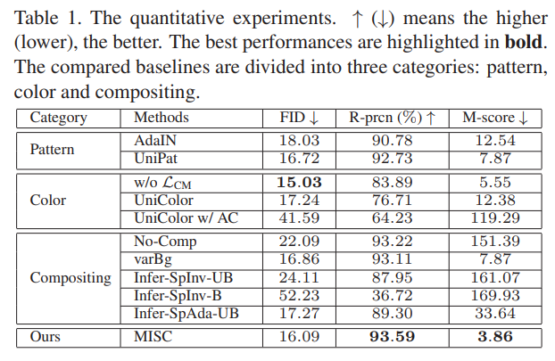
Wish You Were Here: Context-Aware Human Generation
2020-05-21
Inserting humans into existing images in a photorealistic manner while respecting the semantic context of the scene.
Method
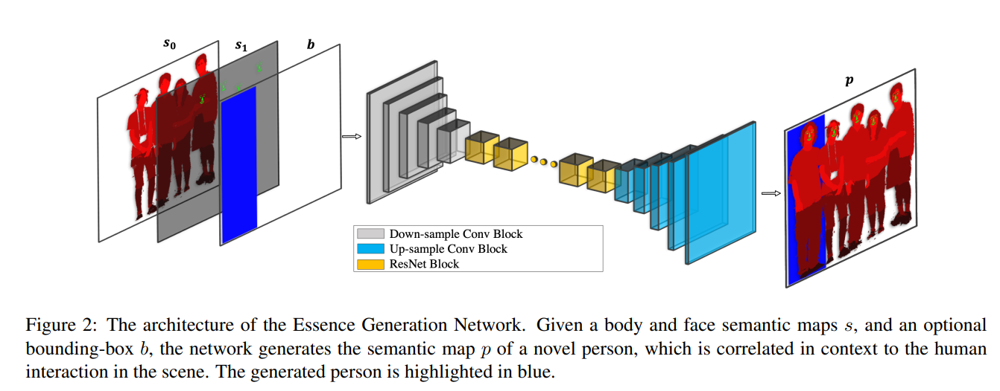
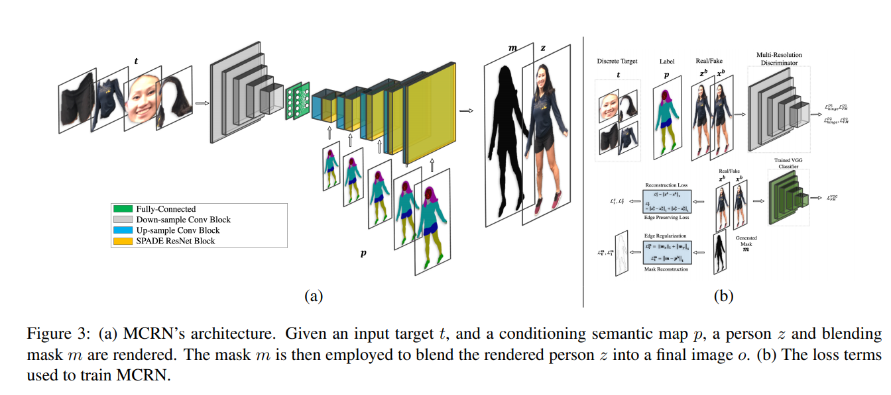
Three subnetworks are involved.
- The first Essence Generation Network (EGN) generates the semantic map of the new person, given the pose of other persons in the scene.
- The second Multi-conditioning rendering network (MCRN) renders the pixels of the novel person.
- The third Face refinement network (FRN) refines the generated face.
Difference from previous work
Do not require a driving pose or a semantic map to render a novel person.
Far less limited in the class of objects.
Result
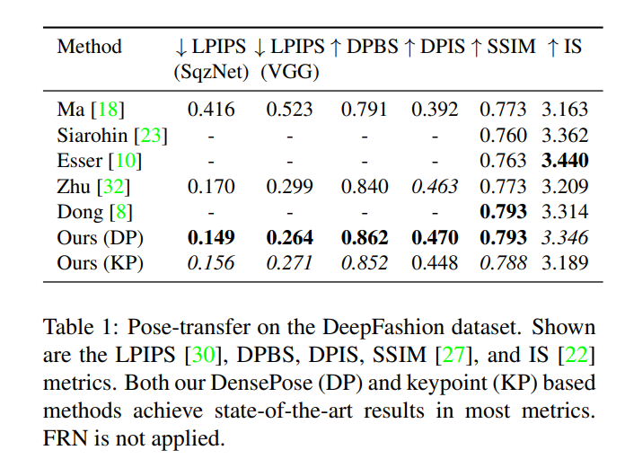
Region-adaptive texture enhancement for detailed person image synthesis
2020-05-26
Person image synthesis, texture enhancement
Method
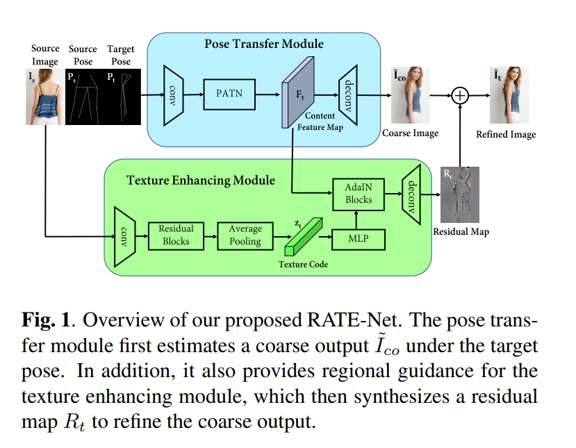
RATE-Net utilizes the source image for label map estimation and texure control.
An effective training strategy to maximize the mutual guidance between two modules.
pose transfer module
Gets a reasonable content feature map Ft
Generates a coarse image under the target pose.
texture enhancing module
Synthesizes a region-aware residual texture map Rt under the guidance of Ft .
Adaptive Instance Normalization is used to inject the textural code into the content feature map.
Discriminators
shape discriminator DS evaluates pose pairs shape consistency
appearance discriminator DA evaluates synthesized and the source image appearance consistency.
Training strategy
- Update the pose transfer module with L1 loss over coarse image.
- Update two modules together with another texture-aware loss L2 over final output. (end to end)
- Update discriminators for K steps.
(K=3 leads to a nice balance between training speed and discriminative capability)
Difference from previous work
For warping-based strategy, most fine-grained features would be lost due to down-sampling.
U-net architecture with skip-connections, not suitable due to the structural deformation of the human body under different poses.
Deformable skip-connection.
Pixelwise mapping is time-consuming and requires additional dense annotations.
This method synthesize new texture that match the style of the input image with pose transfer module and texture enhancing module.
Result
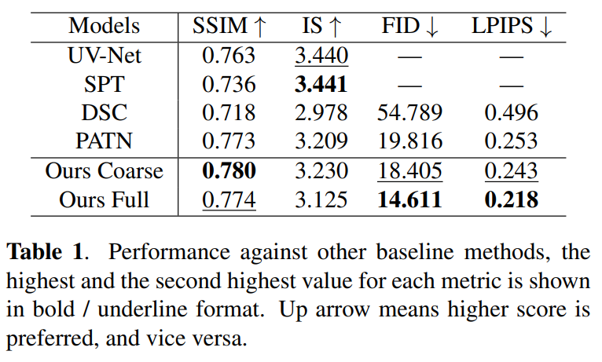
G3AN: Disentangling Appearance and Motion for Video Generation
2020-06-13
Capture the distribution of high dimensional video data and model appearance and motion in disentangled manner.
Method
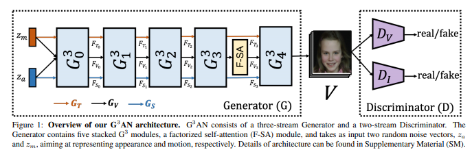
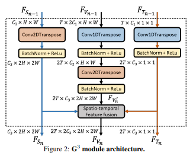
Hierarchical Generator with G3 modules
Factorized transposed spatio-temporal convolution. (1+2)D convolution.
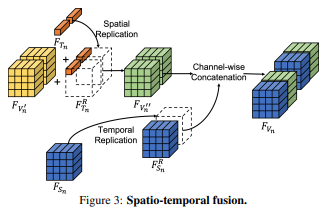
Spatio-temporal fusion
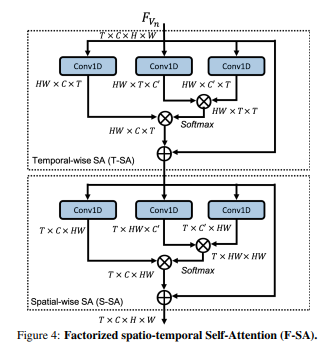
Factorized spatio-temporal self-attention
Two-stream discriminator architecture.one takes a full video as input and one takes randomly sampled frames as input.
Difference from previous work
- MoCoGAN sampled a sequence of noise vectors as motion and a fixed noise as content, which increases the learning difficulty.
- MoCoGAN incorporated a simple image Generator aiming at generating each frame sequentially, after which content and motion features were jointly generated. This leads to incomplete disentanglement of motion and content.
This method is able to entirely decompose appearance and motion in both, latent and feature spaces.
Result
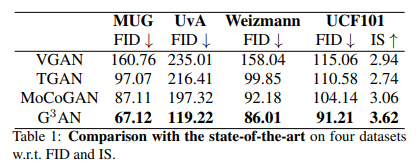
Controllable Person Image Synthesis with Attribute-Decomposed GAN
2020-06-17
Method
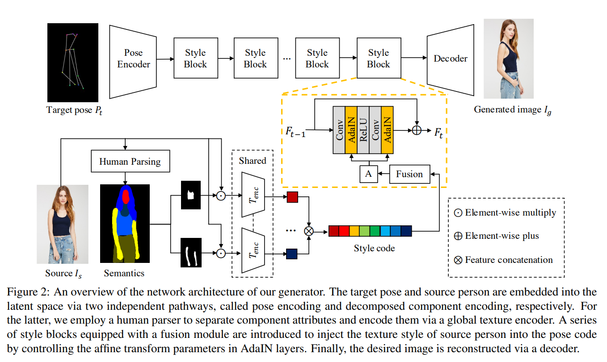
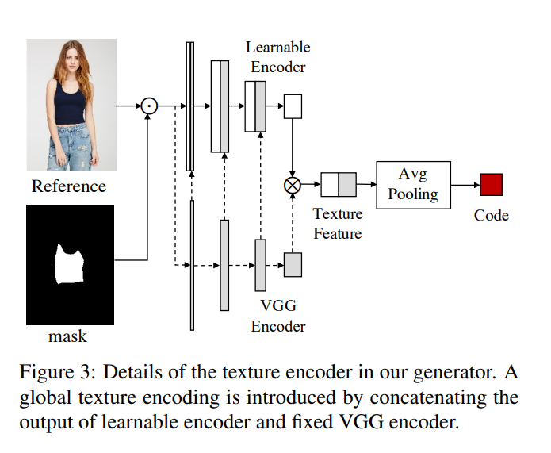
The core idea is to embed human attributes into the latent space as independent codes and thus achieve flexible and continuous control of attributes via mixing and interpolation operations in explicit style representations.
Generator embeds the target pose and source person into two latent codes via two independent pathways, called pose encoding and decomposed component encoding. Two pathways are connected by a series of style blocks, which inject the texture style of source person into the pose feature. A decoder is used to reconstructe the desired person image.
pose encoding
Pose encoder consists 2 down-sampling conv layers, following the regular configuration of encoder.
decomposed component encoding
This module first extracts the semantic map S of source person with an human parser and converts S into a K-channel heat map. There is a binary mask Mi for each channel i for corresponding component.
A texture encoder is used to acquire the corresponding style code.
A fusion module(FM) is proposed as an important auxiliary module for DCE. It consists of 3 FC layers, eeffectively disentangle features and avoid conflicts between forward operation and backward feedback.
person image reconstruction
N deconvolutional layers decoder, following regular decoder configuration.
Discriminators
Two discriminators are used.
Dp used to guarantee the alignment of the pose of generated image with the target pose.
Dt used to ensure the similarity of the appearance texture of generated image with the source person.
Both implemented as PatchGAN.
Difference from previous work
This work is the first to achieve attribute editing in the task of person image synthesis. Not only pose guided, but also component attributes controlled.
The proposed method does not need any annotation of component attributes and enables automatic and unsupervised attribute separation via delicately-designed modules.
Evaluation Metrics
IS – Inception score.
SSIM – Structural Similarity.
CX – contextual score. Cosine distance between deep features to measure the similarity of two non-aligned images, ignoring the spatial position of the features.
Result
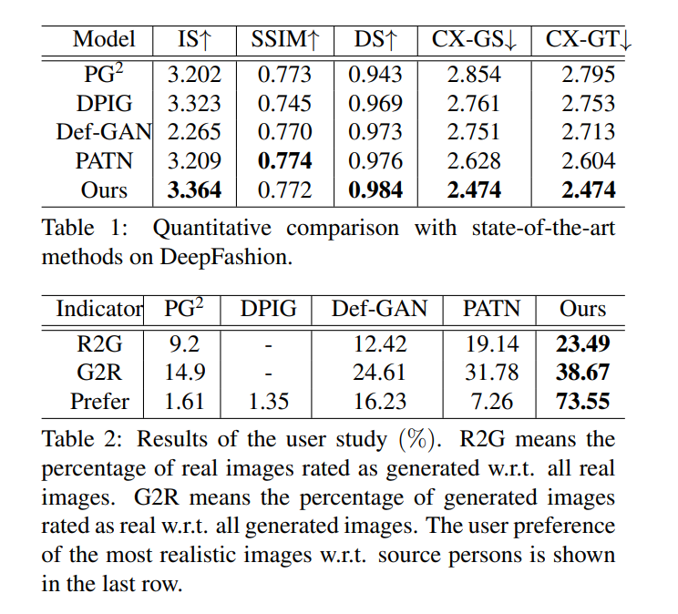